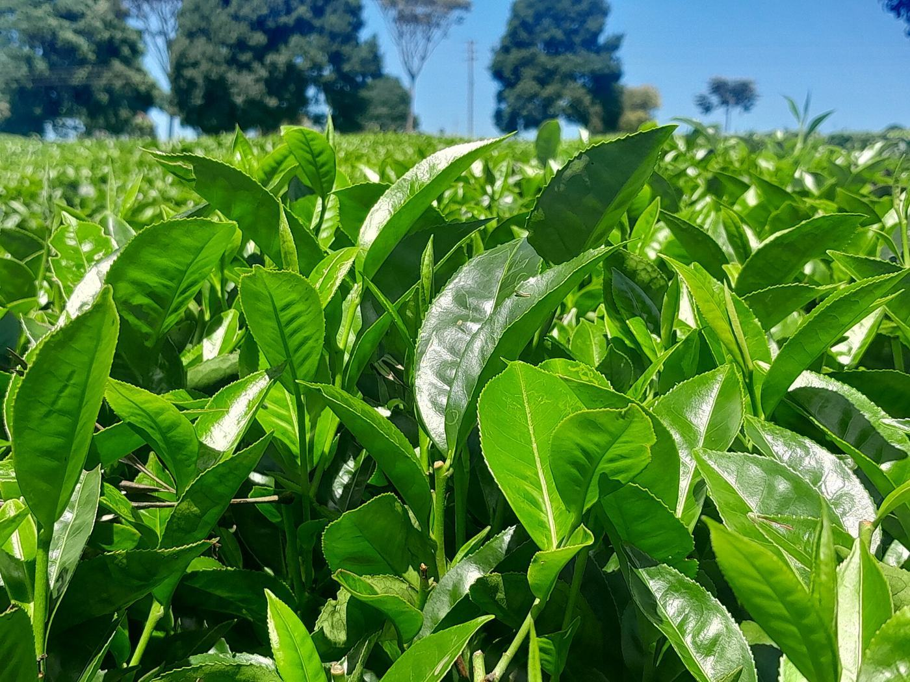

5 クッション
口コミ
「5 クッション」の受け持ちです。ここは、声を受け止めるところ。実際の口コミはまだ載せられないため、制作側が創作した「イメージ例」を三つ置いています。



5 クッション(くっしょん)
クッションは、縁にそって当たりをやわらげる層
クッションはカップの縁につく柔らかな部位です。このページは、お店への声を受け取る場所として設けました。以下は、制作側が想像した声です。
イメージ例Instagramをのぞいてみたい。載っている写真を一枚ずつ眺めるところから始めたいです。
イメージ例公式の投稿を順番にたどってみたい。どんなお店なのか、少しずつ読み進めてみたい。
イメージ例実際に足を運ぶ日を楽しみに、まずは公式の発信を待ってみたい。
上の三件は制作側の創作で、実在のお客様の投稿ではありません。想像した声として並べたサンプルです。